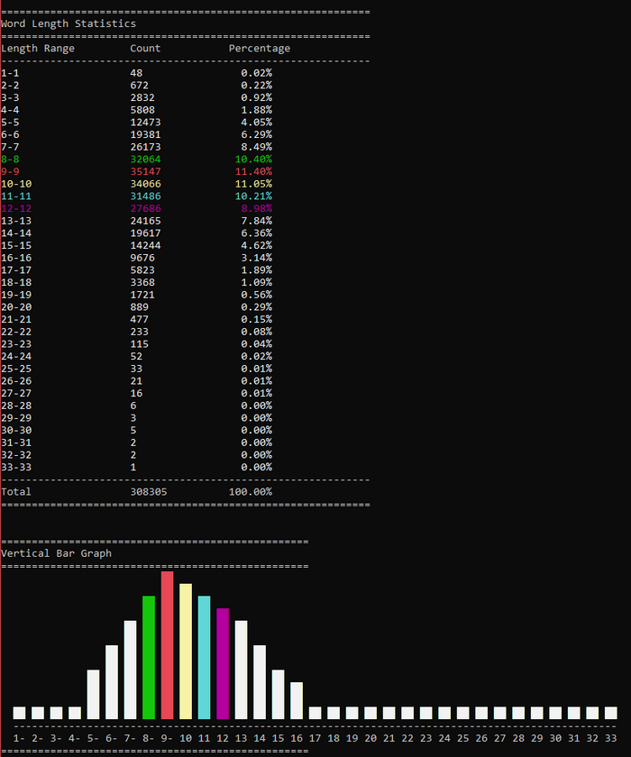
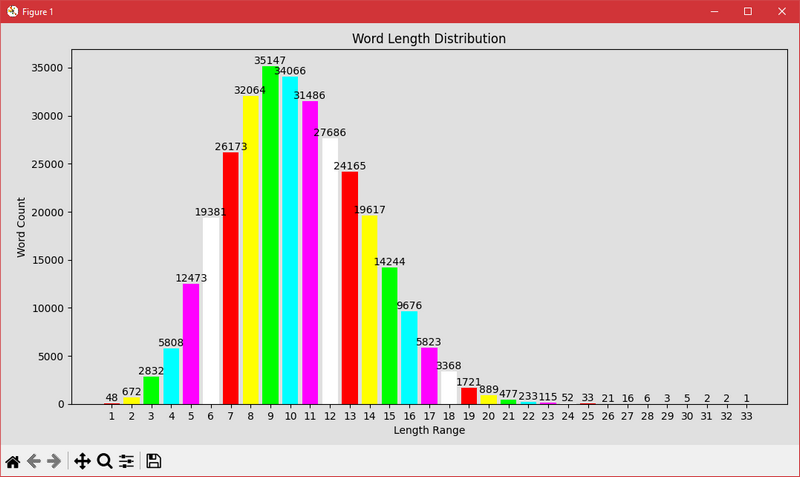

WordStats (ws.py) is a versatile command-line tool designed to analyze word length statistics in text files.
Beyond raw data, it offers several intuitive ways to visualize the results, catering to different preferences and environments.
Below are the primary display options available.
The default output mode provides a clear, tabular summary of word length distributions.
Each row represents a specified length range (or individual length if -len auto is used),
showing the count of words falling into that range and their percentage of the total.
Command example:
python ws.py -in your_file.txt -len 1-5,6-10,11-15For quick visual insights directly in your terminal, WordStats can generate horizontal or vertical bar charts. These text-based graphs are particularly useful for CLI environments and can be enhanced with color for better readability.
Command examples:
# Horizontal bar chart with colors
python ws.py -in your_file.txt -len auto --graph h --color
# Vertical bar chart
python ws.py -in your_file.txt -len 1-5,6-10 --graph vExample of a Text-based Graph (TUI):

For a more interactive and visually rich representation, WordStats can leverage matplotlib to produce a graphical bar chart.
This option opens a separate window displaying the word length distribution, making it ideal for presentations or detailed analysis.
This feature requires the matplotlib library to be installed.
Command example:
# GUI chart (requires matplotlib)
python ws.py -in your_file.txt -len auto --gui --graph h # --graph h or v is currently also neededExample of a Graphical Chart (GUI):
With these varied display options, WordStats ensures that you can analyze and present your word length statistics in the most effective way possible, whether you prefer raw data, terminal graphics, or rich visual plots.